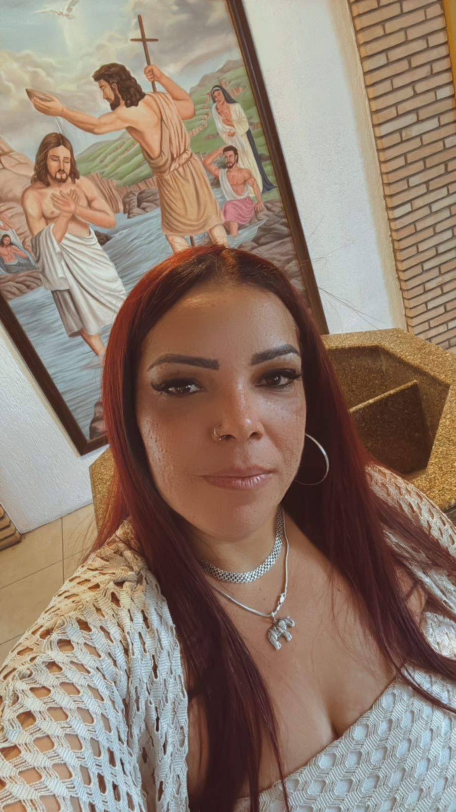

Sobre Nós
Rosa Modas – Hair & Fashion nasceu da força, da coragem e do amor pela beleza e pelo cuidado com as pessoas. Fundado por Rosiane, pernambucana arretada e batalhadora, o salão é mais do que um espaço de estética – é o reflexo de uma trajetória de superação, empreendedorismo e dedicação.
Rosiane iniciou sua jornada no universo da beleza ainda jovem, tentando a carreira como manicure e, mais tarde, como designer de sobrancelhas. Embora esses caminhos não tenham sido seguidos por muito tempo, o desejo de trabalhar com o que ama sempre esteve presente.
Foi no comércio que ela se firmou, revendendo roupas com preços acessíveis dentro da própria comunidade. Sempre com um olhar atento ao estilo e às necessidades das clientes, ela buscava peças bonitas e justas, tornando a moda mais próxima de quem mais precisava.
Além das roupas, Rosiane também trabalha com joias em prata autêntica, como colares e brincos, escolhidas com cuidado em fornecedores de confiança, como na tradicional Rua 25 de Março.
Mas foi no cuidado com os cabelos que ela mais se encontrou. Mesmo sem formação técnica, Rosiane descobriu sua paixão em serviços como escova progressiva, botox, hidratações e cortes simples – sempre feitos com carinho, responsabilidade e respeito por cada cliente.
Hoje, casada há mais de 14 anos e com o apoio da família, Rosiane mantém o salão na garagem de casa – um espaço simples, acolhedor e cheio de história.
Rosa Modas – Hair & Fashion é isso: uma mistura de moda, beleza e afeto. Um negócio construído com amor, pensado para atender com honestidade e proximidade, valorizando cada detalhe e cada pessoa que passa por aqui.
